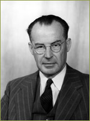
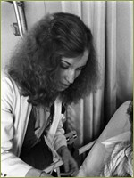
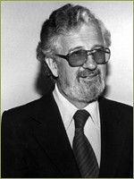
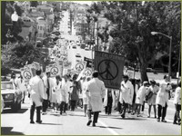

{% include nav.html %}

Saunders believed that training students and healing patients were the paramount duties of the medical center, with research ranking third. There was a well-documented perception that Saunders expressed his priorities by allocating resources to clinicians while stalling on approving appointments and allocating space to meet the needs of research-minded department chairs.
In November 1964, frustrated by this lack of support for research, a group of ten professors from the School of Medicine, including Dean Reinhardt, sent a letter to UC President Clark Kerr asking for an urgent appointment to discuss the future of the San Francisco campus. These professors were committed to the vision of transforming the San Francisco Medical Center into a world-class research university.
In 1965 the School of Medicine announced a new division that marked another major shift in medical education and interschool collaboration. The Division of Ambulatory and Community Medicine developed a four year integrated curriculum to provide training in the problems of poverty, overpopulation, urbanization, rural health, community mental health and aging populations. Dr. William Reinhardt, Dean of the School of Medicine, appointed Dr. Robert H. Credé as its first chairman, who put in motion the development of a training program to emphasize out-of-hospital care, including family medicine and management of the patient in the home, the function of community health services, leadership by physicians in community medicine and the coordination of health care among professional groups. He also actively supported inter-professional learning between nursing and medical students, one factor in the later development of the nurse practitioner role.
Under what became known as the Clinical Pharmacy Program, pharmacy students, residents and faculty were trained to work at patients’ bedsides to help administer drugs and make treatment decisions. Associate Dean Jere Goyan (who went on to become dean and later serve as Commissioner of the FDA), was instrumental in establishing the Clinical Pharmacy Program and continued to advocate for it during his deanship. Goyan, Department of Pharmacy Chair Sidney Riegelman and Vice-Chair Donald Sorby sought to establish a program in which physicians would have the opportunity to discuss drug uses and prescriptions with the pharmacist. With the support of School of Pharmacy Dean Troy C. Daniels and the approval of J. Englebert-Dunphy, acting Chancellor and Chair of the Department of Surgery, a “test site” was established in the surgical service on the ninth floor of Moffitt Hospital.
In a round-the-clock service available seven days a week—an operating schedule that was the first of its kind in the nation—a pharmacist was available to receive all orders, fill them if possible from unit-dose stock in the mini-pharmacy, and dispatch the remainder to the central pharmacy. Pharmacists also monitored patients for side effects and offered advice on “rational drug therapy” providing on-site recommendations for prescribing any of the approved hospital drugs (which in 1985 had grown to the order of some 850 different drugs). From the beginning, the presence of pharmacists in the wards and at the beside stimulated drug-related queries from nurses, intern/residents, and residents, and pharmacists became part of the hospitals Code Blue (cardiopulmonary resuscitation) Team bringing emergency drugs to the patient. Within the first year following its foundation in 1966, the progress of clinical pharmacy was articulated by William E. Smith, the first resident organizer:
In a ten-year development plan written in 1967 (the year that Goyan became Dean), the School of Pharmacy committed itself to a revision of the curriculum that would enable the entire terminal year to be devoted to a combination of inpatient and outpatient clerkships. It was a radical shift in the training of pharmacists and in the organization of hospital pharmaceutical care. Clinical pharmacy also created the pain consultation service, organized by Peter Koo and physicians James Morris and Richard Crayne in 1979 as a low back pain program under the aegis of the Department of Orthopaedic Surgery.
 Under Dean Helen Nahm’s leadership from January 1958, a number of curricular changes in the School of Nursing occurred, revolutionizing the education of nurses in a number of pioneering undergraduate and graduate programs. In fall 1959, all nursing instruction moved from Berkeley to the San Francisco campus, while a number of new faculty appointments were made which paved the way for the development of new courses and areas of concentration. By 1960 the school had 42 faculty members and grants from the National Institute for Mental Health, National Heart Institute, National Cancer Institute and the Rockefeller Sealantic Fund to help support new teaching and research innovations for faculty and students. Throughout the 1960s and early 1970s, the number of master’s degree students in nursing surged—from eighteen students in 1958 to over 200 in 1975. In the period from 1959 to 1975 the framework of the master’s program in nursing shifted from an emphasis on teaching and administration to a clinical focus, initially in four major areas (medical-surgical, maternal-child, psychiatric-mental health, and community health nursing) and then to a wider range of more defined specialties, with the clinical specialist, and somewhat later, the nurse practitioner roles joining educator and administrator roles.
Under Dean Helen Nahm’s leadership from January 1958, a number of curricular changes in the School of Nursing occurred, revolutionizing the education of nurses in a number of pioneering undergraduate and graduate programs. In fall 1959, all nursing instruction moved from Berkeley to the San Francisco campus, while a number of new faculty appointments were made which paved the way for the development of new courses and areas of concentration. By 1960 the school had 42 faculty members and grants from the National Institute for Mental Health, National Heart Institute, National Cancer Institute and the Rockefeller Sealantic Fund to help support new teaching and research innovations for faculty and students. Throughout the 1960s and early 1970s, the number of master’s degree students in nursing surged—from eighteen students in 1958 to over 200 in 1975. In the period from 1959 to 1975 the framework of the master’s program in nursing shifted from an emphasis on teaching and administration to a clinical focus, initially in four major areas (medical-surgical, maternal-child, psychiatric-mental health, and community health nursing) and then to a wider range of more defined specialties, with the clinical specialist, and somewhat later, the nurse practitioner roles joining educator and administrator roles.
Another significant development in the School of Nursing curricula was the establishment of a doctoral program in nursing in 1965. In 1972 the School of Nursing established the Department of Social and Behavioral Sciences, another first at a health science campus anywhere, following the establishment of the PhD program in Medical Sociology in 1968 with the leadership of Professor Anselm Strauss. During the 1970s nurse practitioner programs developed, initially in pediatric and maternity areas, then to address adult health needs, and then families. These transitioned in a few years from continuing education offerings, designed for practicing nurses, into specializations in the masters program. The programs used a wide range of clinical teaching sites, including community clinics, physician offices, and outpatient clinics in the Bay area, even, for the family nurse practitioner program, extending to the Fresno AHEC Center.
The Medical Scientist Training Program (MSTP) was a significant development of an earlier innovation in the form of the Summer Research Training Program (SRTP), which also emphasized basic science research training for medical students. In 1962 a grant was obtained from the NIH to support the program, which was soon directed by Dr. Chauncey Leake. The program gathered further financial support from US Public Health Service grants, voluntary health agencies and private industry. Similar to the aims of the MSTP, the purpose of this program was “to recognize, encourage and prepare outstanding students to enter some field of academic medicine” and to provide competitive stipends to compete with alternate non-medical jobs students may pursue in the summer to earn money.
Rapid technological developments stimulated by the Bay Area orientation to Silicon Valley and information technology helped the early development of innovative computer research labs. In 1977, the School of Pharmacy’s Computer Graphics Laboratory was established through the efforts of Robert Langridge and Tom Ferrin to make computer models of proteins and molecules.
Langridge had been a graduate student in Maurice Wilkins’s lab at King’s College, London, conducting x-ray studies of DNA and by the time of his arrival at UCSF had spent time at Yale, Harvard, Chicago and MIT. Langridge’s lab allowed researchers to analyze the interaction of molecules using three-dimensional computer modeling. Among the first investigations using the Computer Graphics Laboratory was the Acting Dean of the School of Pharmacy, Eugene Jorgensen’s, study of the thyroid hormone thyroxine which led to his development of the drug DIMIT. Today the UCSF Computer Graphics Laboratory (CGL) is home to the Resource for Biocomputing, Visualization, and Informatics (RBVI), a NIH National Center for Research Resources Biomedical Technology Resource Center for the integrated analysis of biological sequence, structure, and functional information. The other major components of the Center include the Babbitt Laboratory and the Sequence Analysis and Consulting Service (SACS).
He was also given a title unique in the UC system, Professor of Social Medicine, because of his national and international background in health policy. Chancellor Lee led the campus during a time of political and social turmoil created by Viet Nam war protests and the Civil Rights Movement. His understanding of social forces and his close relationship to students and staff allowed UCSF to continue its commitment to academic excellence and establish affirmative action. He was especially noted for his efforts to stimulate minority recruitment and enrollment.
 During his tenure as chancellor, the San Francisco Medical Center was renamed the “University of California, San Francisco” in 1970 and became the only health sciences campus in UC’s nine-campus system.
During his tenure as chancellor, the San Francisco Medical Center was renamed the “University of California, San Francisco” in 1970 and became the only health sciences campus in UC’s nine-campus system.
Lee remained chancellor until 1972, when he started UCSF’s Health Policy Program – the first of its kind in the U.S., now emulated by many institutions across the country as a legitimate discipline in which to study health sciences issues. Under his leadership, the program became an Organized Research Unit in 1981, when it was renamed the Institute for Health Policy Studies. As one of the nation’s foremost authorities in the study of equal access to health care, Dr. Lee was a frequent adviser to federal health policy makers.
Other technologies such as those in neonatal intensive care transformed the practice of pediatrics at UCSF, but not without raising ethical and moral questions about life-preserving technological interventions. In 1972, Chancellor Lee invited Albert Jonsen, PhD, to join the new Institute for Health Policy to study the ethical aspects of health policy. Trained in philosophy and theology, Jonsen had left his position as President of the University of San Francisco and UCSF’s was one of only two secular medical schools (the other being Pennsylvania State University) to have a professor of medical ethics on the faculty. In 1974, under the encouragement of Dean Julius Krevans, Jonsen was appointed associate professor of bioethics and developed innovative courses for medical students on the social impact of evolving medical technologies and practices. Aspects of this work continue to this day in the Department of Anthropology, History and Social Medicine.
>> Innovations in Research
Innovations in Professional Education
In 1964, Provost John Saunders became UCSF’s first chancellor. A veteran of the medical school faculty, Chancellor Saunders came to the University in 1931 as an anatomy professor and was chair of the department from 1938-1956. He also served as chair of the History of the Health Sciences department from 1942-1975, Dean of the School of Medicine from 1956-63, University Librarian from 1943-1971, and the first provost from 1958-1964. Saunders resigned as Chancellor in 1966 and took a special Regents Chair in History of Medicine on the San Francisco Campus.
Saunders believed that training students and healing patients were the paramount duties of the medical center, with research ranking third. There was a well-documented perception that Saunders expressed his priorities by allocating resources to clinicians while stalling on approving appointments and allocating space to meet the needs of research-minded department chairs.
In November 1964, frustrated by this lack of support for research, a group of ten professors from the School of Medicine, including Dean Reinhardt, sent a letter to UC President Clark Kerr asking for an urgent appointment to discuss the future of the San Francisco campus. These professors were committed to the vision of transforming the San Francisco Medical Center into a world-class research university.

In 1966, Willard C. Fleming, who had been an outstanding Dean of the School of Dentistry since 1939, became the second Chancellor of the campus. Chancellor Fleming was chosen from outside of the School of Medicine to avoid further conflict between clinicians and researchers within the school, and his calm demeanor proved useful for stabilizing the faculty and supporting the growing research enterprise. The San Francisco Campus was now on the road to becoming a full-fledged research university.
Willard C. Fleming
In 1965 the School of Medicine announced a new division that marked another major shift in medical education and interschool collaboration. The Division of Ambulatory and Community Medicine developed a four year integrated curriculum to provide training in the problems of poverty, overpopulation, urbanization, rural health, community mental health and aging populations. Dr. William Reinhardt, Dean of the School of Medicine, appointed Dr. Robert H. Credé as its first chairman, who put in motion the development of a training program to emphasize out-of-hospital care, including family medicine and management of the patient in the home, the function of community health services, leadership by physicians in community medicine and the coordination of health care among professional groups. He also actively supported inter-professional learning between nursing and medical students, one factor in the later development of the nurse practitioner role.

In 1966, the School of Pharmacy developed an innovative program to test the use of clinically skilled pharmacists in a patient care area—the first such program in the United States.
A UCSF pharmacist advising a patient.
Under what became known as the Clinical Pharmacy Program, pharmacy students, residents and faculty were trained to work at patients’ bedsides to help administer drugs and make treatment decisions. Associate Dean Jere Goyan (who went on to become dean and later serve as Commissioner of the FDA), was instrumental in establishing the Clinical Pharmacy Program and continued to advocate for it during his deanship. Goyan, Department of Pharmacy Chair Sidney Riegelman and Vice-Chair Donald Sorby sought to establish a program in which physicians would have the opportunity to discuss drug uses and prescriptions with the pharmacist. With the support of School of Pharmacy Dean Troy C. Daniels and the approval of J. Englebert-Dunphy, acting Chancellor and Chair of the Department of Surgery, a “test site” was established in the surgical service on the ninth floor of Moffitt Hospital.
In a round-the-clock service available seven days a week—an operating schedule that was the first of its kind in the nation—a pharmacist was available to receive all orders, fill them if possible from unit-dose stock in the mini-pharmacy, and dispatch the remainder to the central pharmacy. Pharmacists also monitored patients for side effects and offered advice on “rational drug therapy” providing on-site recommendations for prescribing any of the approved hospital drugs (which in 1985 had grown to the order of some 850 different drugs). From the beginning, the presence of pharmacists in the wards and at the beside stimulated drug-related queries from nurses, intern/residents, and residents, and pharmacists became part of the hospitals Code Blue (cardiopulmonary resuscitation) Team bringing emergency drugs to the patient. Within the first year following its foundation in 1966, the progress of clinical pharmacy was articulated by William E. Smith, the first resident organizer:
[T]he practice of pharmacy on the hospital floor appears to be a logical and direct method to help solve the various problems associated with modern complex drug therapy and drug distribution. Several members of the surgical and nursing personnel … have expressed their acceptance of the pharmacist on the patient care team because he adds to the overall effort of providing care. The pharmacists believe that the type of service developed … is the only kind of pharmaceutical service that should exist in the hospital.

During Jere Goyan’s tenure as dean, the UCSF School of Pharmacy became the leader among pharmacy schools nationwide in research as measured by federal research funding, and has since consistently ranked first in the academic quality of its doctor of pharmacy program. Goyan’s conviction that clinical experience should be part of a pharmacist’s training and practice, while revolutionary when he proposed it, is now accepted internationally. Thousands of pharmacists across the nation owe a debt of gratitude to this man for his influence on their practices.
Pharmacy Dean Jere Goyan
In a ten-year development plan written in 1967 (the year that Goyan became Dean), the School of Pharmacy committed itself to a revision of the curriculum that would enable the entire terminal year to be devoted to a combination of inpatient and outpatient clerkships. It was a radical shift in the training of pharmacists and in the organization of hospital pharmaceutical care. Clinical pharmacy also created the pain consultation service, organized by Peter Koo and physicians James Morris and Richard Crayne in 1979 as a low back pain program under the aegis of the Department of Orthopaedic Surgery.
Helen Nahm
Another significant development in the School of Nursing curricula was the establishment of a doctoral program in nursing in 1965. In 1972 the School of Nursing established the Department of Social and Behavioral Sciences, another first at a health science campus anywhere, following the establishment of the PhD program in Medical Sociology in 1968 with the leadership of Professor Anselm Strauss. During the 1970s nurse practitioner programs developed, initially in pediatric and maternity areas, then to address adult health needs, and then families. These transitioned in a few years from continuing education offerings, designed for practicing nurses, into specializations in the masters program. The programs used a wide range of clinical teaching sites, including community clinics, physician offices, and outpatient clinics in the Bay area, even, for the family nurse practitioner program, extending to the Fresno AHEC Center.
The Medical Scientist Training Program (MSTP) was a significant development of an earlier innovation in the form of the Summer Research Training Program (SRTP), which also emphasized basic science research training for medical students. In 1962 a grant was obtained from the NIH to support the program, which was soon directed by Dr. Chauncey Leake. The program gathered further financial support from US Public Health Service grants, voluntary health agencies and private industry. Similar to the aims of the MSTP, the purpose of this program was “to recognize, encourage and prepare outstanding students to enter some field of academic medicine” and to provide competitive stipends to compete with alternate non-medical jobs students may pursue in the summer to earn money.
Rapid technological developments stimulated by the Bay Area orientation to Silicon Valley and information technology helped the early development of innovative computer research labs. In 1977, the School of Pharmacy’s Computer Graphics Laboratory was established through the efforts of Robert Langridge and Tom Ferrin to make computer models of proteins and molecules.
Langridge had been a graduate student in Maurice Wilkins’s lab at King’s College, London, conducting x-ray studies of DNA and by the time of his arrival at UCSF had spent time at Yale, Harvard, Chicago and MIT. Langridge’s lab allowed researchers to analyze the interaction of molecules using three-dimensional computer modeling. Among the first investigations using the Computer Graphics Laboratory was the Acting Dean of the School of Pharmacy, Eugene Jorgensen’s, study of the thyroid hormone thyroxine which led to his development of the drug DIMIT. Today the UCSF Computer Graphics Laboratory (CGL) is home to the Resource for Biocomputing, Visualization, and Informatics (RBVI), a NIH National Center for Research Resources Biomedical Technology Resource Center for the integrated analysis of biological sequence, structure, and functional information. The other major components of the Center include the Babbitt Laboratory and the Sequence Analysis and Consulting Service (SACS).
Social Medicine and Ethics

Phillip R. Lee became UCSF’s third chancellor in 1969, coming to UCSF from his post as U.S. Assistant Secretary for Health and Scientific Affairs, Department of Health, Education, and Welfare.
UCSF faculty, students, and staff protest the US invasion of Cambodia, May 1970
He was also given a title unique in the UC system, Professor of Social Medicine, because of his national and international background in health policy. Chancellor Lee led the campus during a time of political and social turmoil created by Viet Nam war protests and the Civil Rights Movement. His understanding of social forces and his close relationship to students and staff allowed UCSF to continue its commitment to academic excellence and establish affirmative action. He was especially noted for his efforts to stimulate minority recruitment and enrollment.
Philip R. Lee
Lee remained chancellor until 1972, when he started UCSF’s Health Policy Program – the first of its kind in the U.S., now emulated by many institutions across the country as a legitimate discipline in which to study health sciences issues. Under his leadership, the program became an Organized Research Unit in 1981, when it was renamed the Institute for Health Policy Studies. As one of the nation’s foremost authorities in the study of equal access to health care, Dr. Lee was a frequent adviser to federal health policy makers.
Other technologies such as those in neonatal intensive care transformed the practice of pediatrics at UCSF, but not without raising ethical and moral questions about life-preserving technological interventions. In 1972, Chancellor Lee invited Albert Jonsen, PhD, to join the new Institute for Health Policy to study the ethical aspects of health policy. Trained in philosophy and theology, Jonsen had left his position as President of the University of San Francisco and UCSF’s was one of only two secular medical schools (the other being Pennsylvania State University) to have a professor of medical ethics on the faculty. In 1974, under the encouragement of Dean Julius Krevans, Jonsen was appointed associate professor of bioethics and developed innovative courses for medical students on the social impact of evolving medical technologies and practices. Aspects of this work continue to this day in the Department of Anthropology, History and Social Medicine.
>> Innovations in Research
{% include footer.html %}